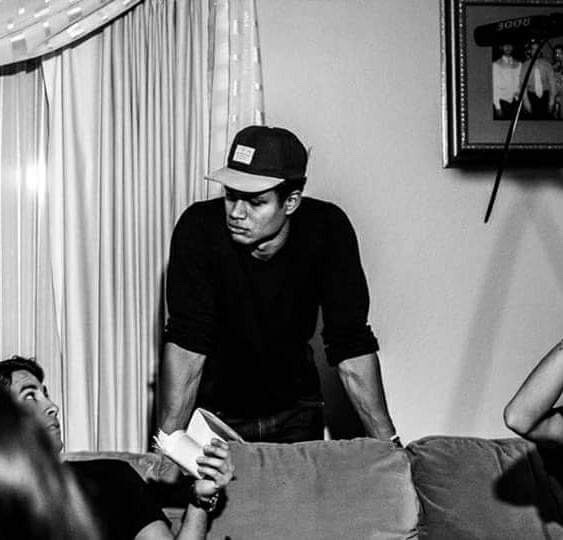

Lennox Sweeney
Forward-thinking Content Manager, experienced working with cross-functional teams to achieve marketing and brand development goals. Skilled in online content development. Collaborates cross-functionally to create, execute, and optimize fresh digital approaches. Have primarily worked freelance, but open to full time employment as well.
LinkedIn profile
Sameer Mishra
 A fast paced, always curious to learn more with a positive attitude. Mentoring and enabling others with the journey. Adapatable and kind in approach
A fast paced, always curious to learn more with a positive attitude. Mentoring and enabling others with the journey. Adapatable and kind in approach
LinkedIn profile